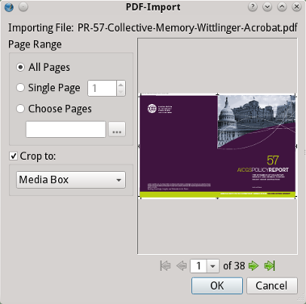
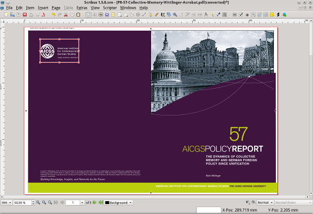

No matter how much time is being spent on writing import or export filters for a particular file format, it’s almost impossible to guarantee a 100% identical display/output on two different computers, simply because there are too many uncertainties, like software features or installed fonts. This is generally accepted (and actually a feature) for content we view in a web-browser. In print, however, it is unacceptable, not the least since typesetters and designers spend a lot of time refining graphics and text down to percentages of points. Hence the development of so-called output or exchange formats, whose content will look exactly the same on every computer. The price to pay for the reliability of the output used to be a lack of editability of those files, especially PDF. This limitation, as well as demands from users, presented a challenge to software developers and resulted in specialized programs that enabled the editing of file formats that were explictly designed to be uneditable. As of version 1.6, Scribus has joined this club.
For a long time the standard output/exchange format for printing was PostScript, which is actually a full-fledged programming language, but more commonly known as a page description language. In PostScript, every page in a document, as well as the page’s content and other data like colors or color profiles is stored exactly as seen by the user of the generating software.
A major downside of the PostScript format is the file size, especially when PS files comprise many high-resolution graphics. The developer of PostScript, Adobe Systems, thus invented a more modern format, which was orginally based on PS but has seen many enhancements beyond the restrictions of its predecessor: the Portable Document Format (PDF). While PostScript more or less describes a document on a per-page base, a PDF document is some kind of database that not only allows much smaller file sizes, but also enables faster access to the content of the files. Over time Adobe developed and advertised PDF from “digital paper” for office use, to a PostScript replacement. In recent years many other features, like digital forms, presentation effects, embedding of videos or 3D graphics have been added, and Scribus already supports a substantial amount of those, both in import and in export. Whereas the PDF format was orginally invented by Adobe Systems, standardization has been handed over to the most important international standards body, ISO. Subsets of the PDF standard, like PDF/E are being worked on by other international organizations.
The stellar ascent of XML and the related use of ZIP containers for complex XML-based documents with multiple types of content (e.g. OpenDocument) resulted in the development of an XML-based container format called XML Paper Specification (XPS) by Microsoft. XPS isn’t as versatile as PDF and focusses very much on the orginal purpose of PostScript/PDF, which is describing the content of pages as precisely as possible. XPS files allow for different color models (RGB, CMYK, spot colors) and font embedding. However, in contrast to PostScript and PDF, XPS doesn’t support the legacy PostScript font format, only TTF and OTF fonts. In 2009, Microsoft transferred the further development of the specification to the standardization body ECMA International, which has added significant changes and also renamed the file extension to OXPS. Since then, the formats are no longer compatible, but Scribus can import both versions. One of the biggest advantages of XPS/OXPS is its support of most, if not all, graphics features of MS Office components, so Scribus users can reliably import and modify documents created by MS Word or MS PowerPoint if XPS/OXPS is being used as an exchange format.
As with files from other DTP programs and vector files, output formats can either imported into an existing document or directly opened for further editing. In both cases you will be presented an import dialog, but if you are trying to import a file, you cannot select a range of pages, only a single page. Another difference between opening and importing is that in opened files you can select items directly for editing, while imported files are being imported as a single group. Thus, imported files need to be ungrouped before single elements can be edited.
If a file has been created with one or more PostScript/PDF “box” types, you can decide to crop the file to one of those boxes.
|  |
The major caveat of PostScript import is that text cannot be imported as such but will instead be converted to vector drawings. The reason for this behavior is the desire to preserve the original layout 100%, which would be impossible if text could be edited. There is one exception, though, namely text annotations and hyperlinks, which may also be saved in a PostScript document. These items will be imported as text frames, while their content will not, but at least it’s possible to add new text to those frames. All other items (image frames and vector drawings) can be edited with the usual tools.
A major improvement in Scribus 1.6 is its ability to store bitmap images in a SLA file. As a consequence, importing PostScript files and other formats that allow for embedding images will no longer result in countless temporary bitmap files written to your hard drive.
Scribus will import all colors in their orginal color model (RGB, CMYK, or spot colors, the latter being imported with their original names).
In addition to the issues and features regarding PostScript, unique PDF features, even if supported by Scribus during export won’t survive import, among them layers, presentation effects, or 3D graphics. PDF form elements, on the other hand, will be imported as such.
|  |
Most of what has been said about PDF is also true for XPS/OXPS files. There is, however, another caveat related to colors. As of Windows Vista XPS isn’t just another file format, it’s also at the core of the Windows printing system, replacing GDI+. This means that, unless you are cooperating with a company that uses sophisticated XPS software, all colors will be in RGB, simply because almost all desktop printers expect this color space. This will definitely be the case if an XPS/OXPS file has been created using the native Windows XPS printer driver. Thus, if you need CMYK or spot colors to be preserved, XPS/OXPS probably shouldn’t be your format of choice.